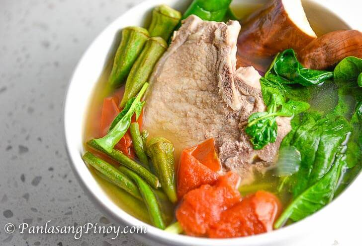

Home
PORK SINIGANG STEW

Description
This is a delicious pork stew recipe that is perfect for a hearty meal.
Ingredients
- 2-4 tomatoes
- 2 red onions
- splash fish sauce (patis)
- 1½-2½ lb pork belly
- 1 long hot green pepper
- 2-3 chinese eggplant
- 2 eddoes or taro
- ½ lb chinese string bean cut in half
- ½ lb spinach
- 1 daikon
- ½ packet of sinigang seasonings mix I prefer Mama Sita's
Steps
- Wash pork belly in water and white vinegar then strain and rinse.
- In large stock pot, add oil and sautee tomatoes and onion.
- Add pork belly and let lightly sautee.
- Add water, fish sauce, long pepper, and black or white pepper to taste.
- Let come to a rolling boil then reduce heat to a constant simmer.
- After fifteen minutes, add taro, daikon, and eggplant. At this point you can start making the white rice in the rice cooker so it can be ready at the same time.
- After twenty minutes of a steady boil, add string beans and let cook for 10-15 minutes.
- Add spinach and sinigang mix to taste, ½ a pack goes a long way so taste it so it is not overly sour. Cook for 10 more minutes till
- You can add a little squeeze of lemon and more black pepper to taste.